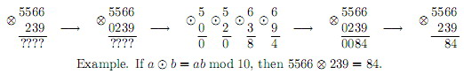

给出一个10行10列的数字矩阵，第一行为当a=0时，它与b的值从0取得9时，做圈圈运算的结果。最后给出两个数字M，N。代表M圈圈运算(M+1)圈圈运算(M+2)...圈圈运算(N)
0 <= M <=N <= 10^18).
定义一个操作，我们称为圈圈运算吧。
参加运算的是两个十进制数a和b，结果也规定是一个十进制数，输入文件将给出运算结果。特别得是：0圈圈运算0=0
如果是两个多位数进行运算 ，将按位对齐。再逐位进行运算。
下图按圈圈运算认为是取Mod 运算，即a圈圈运算 b=a*b mod 10

给出一个10行10列的数字矩阵，第一行为当a=0时，它与b的值从0取得9时，做圈圈运算的结果。最后给出两个数字M，N。代表M圈圈运算(M+1)圈圈运算(M+2)...圈圈运算(N)
0 <= M <=N <= 10^18).
输出运算结果，无前置零
0 1 2 3 4 5 6 7 8 9
1 2 3 4 5 6 7 8 9 0
2 3 4 5 6 7 8 9 0 1
3 4 5 6 7 8 9 0 1 2
4 5 6 7 8 9 0 1 2 3
5 6 7 8 9 0 1 2 3 4
6 7 8 9 0 1 2 3 4 5
7 8 9 0 1 2 3 4 5 6
8 9 0 1 2 3 4 5 6 7
9 0 1 2 3 4 5 6 7 8
0 10
15